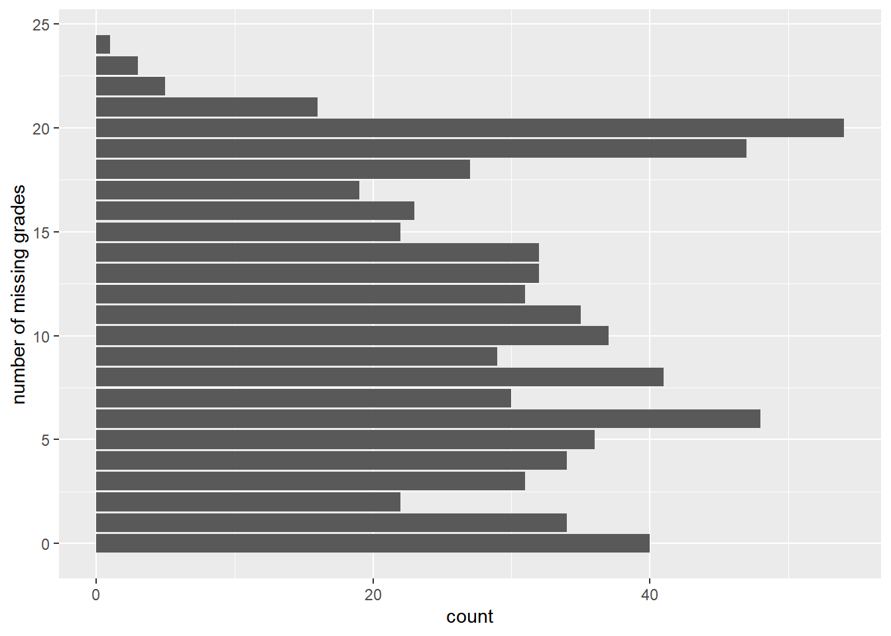
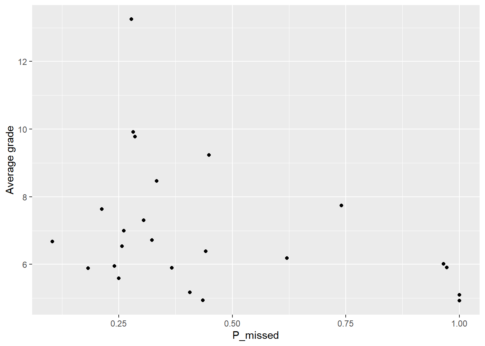

here::i_am("r-101-grade-analysis.Rproj")
library(here)
library(vroom)
library(dplyr)
library(tidyr)
library(ggplot2)
library(stringr)
library(knitr)Grade analysis
Link to GitHub repository: https://github.com/wuyuntong/r-101-grade-analysis.
Question 1
grades <- vroom(here("grades.csv"))Rows: 729 Columns: 32
── Column specification ────────────────────────────────────────────────────────
Delimiter: ","
chr (1): Group
dbl (31): Id, Exam, MCQ_1, MCQ_2, MCQ_3, MCQ_4, MCQ_5, MCQ_6, MCQ_7, MCQ_8, ...
ℹ Use `spec()` to retrieve the full column specification for this data.
ℹ Specify the column types or set `show_col_types = FALSE` to quiet this message.Question 2
grades |>
summarise("max grade" = max(Exam, na.rm = TRUE), "min grade" = min(Exam, na.rm = TRUE), "median grade" = median(Exam, na.rm = TRUE), "mean grade" = mean(Exam, na.rm = TRUE)) |>
knitr::kable()| max grade | min grade | median grade | mean grade |
|---|---|---|---|
| 20 | 0 | 6.5 | 7.148729 |
Question 3
n_abs <- grades |>
summarise(n = sum(is.na(Exam)))The number of students who did not take the exam is 60.
Question 4
grades |>
ggplot(aes(x = Exam)) +
geom_bar(na.rm = TRUE)
Question 5
grades |>
group_by(Group) |>
summarise("number of students" = n()) |>
knitr::kable()| Group | number of students |
|---|---|
| grp_1 | 29 |
| grp_10 | 23 |
| grp_11 | 25 |
| grp_12 | 33 |
| grp_13 | 29 |
| grp_14 | 32 |
| grp_15 | 34 |
| grp_16 | 33 |
| grp_17 | 35 |
| grp_18 | 36 |
| grp_19 | 29 |
| grp_2 | 23 |
| grp_20 | 33 |
| grp_21 | 36 |
| grp_22 | 27 |
| grp_23 | 33 |
| grp_24 | 35 |
| grp_3 | 32 |
| grp_4 | 32 |
| grp_5 | 27 |
| grp_6 | 23 |
| grp_7 | 31 |
| grp_8 | 30 |
| grp_9 | 29 |
Quesiton 6
grades |>
ggplot(aes(y = Group)) +
geom_bar()
Question 7
grades |>
ggplot(aes(y = Group, fill = as.factor(Exam))) +
geom_bar(position = "fill") +
scale_fill_discrete(name = "Exam grade") +
xlab("frequency")
grades |>
ggplot(aes(y = Exam)) +
geom_bar(na.rm = TRUE) +
facet_wrap(~Group)
Question 8
n_abs1 <- grades |>
group_by(Group) |>
summarise("number of absent students" = sum(is.na(Exam)))
n_abs1# A tibble: 24 × 2
Group `number of absent students`
<chr> <int>
1 grp_1 3
2 grp_10 7
3 grp_11 6
4 grp_12 1
5 grp_13 1
6 grp_14 1
7 grp_15 2
8 grp_16 0
9 grp_17 5
10 grp_18 3
# ℹ 14 more rowsQuestion 9
n_abs1 |>
ggplot(aes(y = Group, x = `number of absent students`)) +
geom_col()
Question 10
long <- grades |>
pivot_longer(col = c("Exam", starts_with("MCQ"), starts_with("Online_MCQ")), names_to = "name", values_to = "value")
long# A tibble: 21,870 × 4
Id Group name value
<dbl> <chr> <chr> <dbl>
1 561 grp_16 Exam 10
2 561 grp_16 MCQ_1 15
3 561 grp_16 MCQ_2 18.5
4 561 grp_16 MCQ_3 12.7
5 561 grp_16 MCQ_4 8.24
6 561 grp_16 MCQ_5 13.8
7 561 grp_16 MCQ_6 20
8 561 grp_16 MCQ_7 20
9 561 grp_16 MCQ_8 20
10 561 grp_16 MCQ_9 20
# ℹ 21,860 more rowsQuestion 11
n_missing_grade <- long |>
group_by(Id) |>
summarise("number of missing grades" = sum(is.na(value)))
n_missing_grade# A tibble: 729 × 2
Id `number of missing grades`
<dbl> <int>
1 1 10
2 2 15
3 3 6
4 4 0
5 5 19
6 6 1
7 7 11
8 8 4
9 9 6
10 10 3
# ℹ 719 more rowsQuestion 12
n_missing_grade |> ggplot(aes(y = `number of missing grades`)) +
geom_bar()
Question 13
n_abs2 <- long |>
filter(name == "Exam") |>
group_by(Group) |>
summarise("number of absent students" = sum(is.na(value)))
n_abs2# A tibble: 24 × 2
Group `number of absent students`
<chr> <int>
1 grp_1 3
2 grp_10 7
3 grp_11 6
4 grp_12 1
5 grp_13 1
6 grp_14 1
7 grp_15 2
8 grp_16 0
9 grp_17 5
10 grp_18 3
# ℹ 14 more rowsQuestion 14
n_missing_online_tests <- long |>
filter(str_starts(name, "Online_MCQ")) |>
group_by(Id) |>
summarise("number of missing online tests" = sum(is.na(value)))
n_missing_online_tests# A tibble: 729 × 2
Id `number of missing online tests`
<dbl> <int>
1 1 9
2 2 14
3 3 4
4 4 0
5 5 19
6 6 1
7 7 10
8 8 3
9 9 6
10 10 3
# ℹ 719 more rowsQuestion 15
inner_join(grades, n_missing_online_tests, by = "Id") |>
ggplot(aes(y = `number of missing online tests`, fill = as.factor(Exam))) +
geom_bar(position = "fill") +
scale_fill_discrete(name = "Exam grade") +
xlab("frequency")
Question 16
two_col_table1 <- long |>
filter(str_starts(name, "MCQ")) |>
group_by(Id) |>
summarise("Missed" = (sum(is.na(value)) > 0))
two_col_table1# A tibble: 729 × 2
Id Missed
<dbl> <lgl>
1 1 TRUE
2 2 TRUE
3 3 TRUE
4 4 FALSE
5 5 FALSE
6 6 FALSE
7 7 TRUE
8 8 TRUE
9 9 FALSE
10 10 FALSE
# ℹ 719 more rowsQuestion 17
two_col_table2 <- long |>
filter(str_starts(name, "MCQ")) |>
group_by(Group, Id) |>
summarise("Missed" = (sum(is.na(value)) > 0), .groups = "drop_last") |>
group_by(Group) |>
summarise("P_missed" = sum(Missed) / n())
two_col_table2# A tibble: 24 × 2
Group P_missed
<chr> <dbl>
1 grp_1 0.448
2 grp_10 0.435
3 grp_11 0.24
4 grp_12 1
5 grp_13 0.103
6 grp_14 0.406
7 grp_15 0.441
8 grp_16 0.212
9 grp_17 0.257
10 grp_18 0.972
# ℹ 14 more rowsQuestion 18
grades |>
group_by(Group) |>
summarise("Average grade" = mean(Exam, na.rm = TRUE)) |>
inner_join(two_col_table2, by = "Group") |>
ggplot(aes(x = P_missed, y = `Average grade`)) +
geom_point()